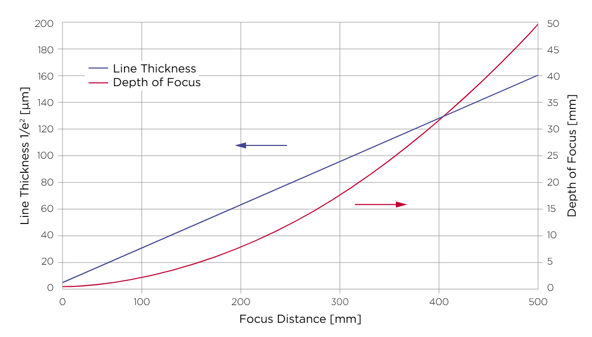
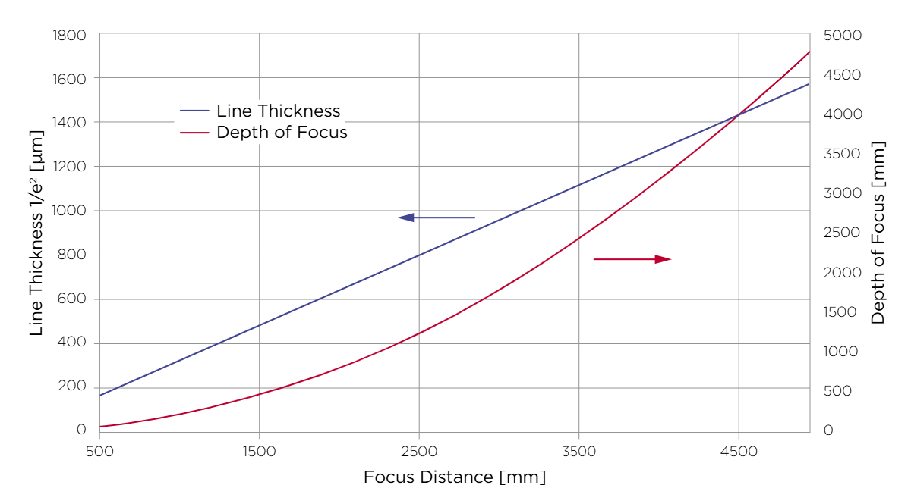
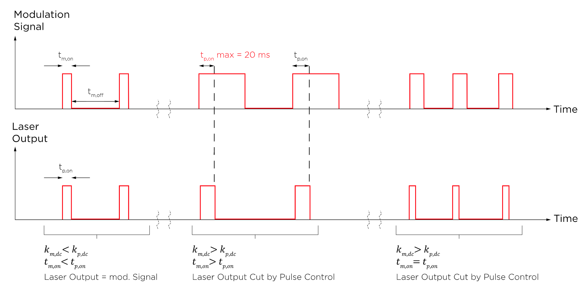
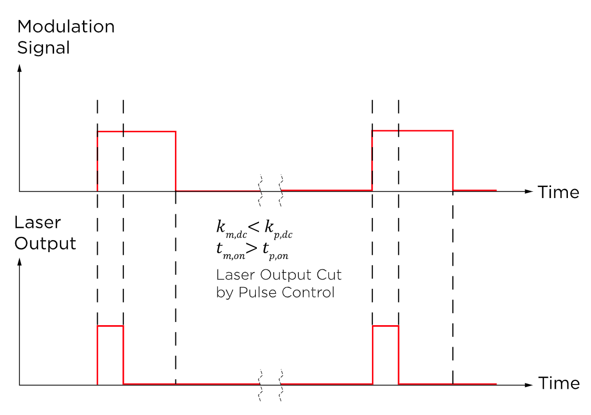
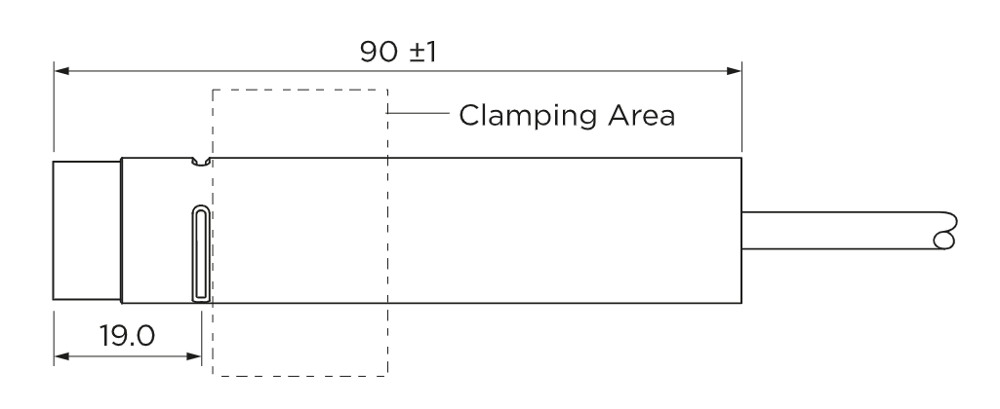
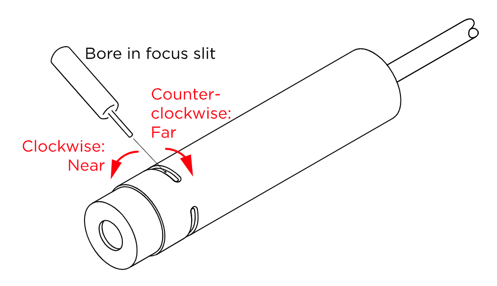

A COMPACT LASER MODULE WITH HIGH PEAK POWER AND SMALL SIZE
The MVpulseHP offers high peak powers (up to 500 mW for 525 nm, 660 nm, 808 nm and even 1000 mW at 445 nm), while the diameter remains 19 mm and the housing has a small size. Active cooling can be avoided, due to the pulsing function. Higher power and therefore higher light intensity can support decreased exposure time and higher throughput (more frames per second, more parts to be inspected per second).
The pulse frequency and duty cycle can be adjusted to the needs of the application. The MVpulseHP is available as standard (ST) and 2-Housing (2H) separating the housing for optics and electronics. There is also a variety of fan angles and two different focus options available.
FEATURES
Pulsed laser module at 4 wavelengths up to 1 W for 445 nm and 500 mW for 525 nm, 660 nm and 808 nm
High pulse power without active cooling
Small laser module for high intensity illumination
Adjustable pulse width, depending on the needs of the application
Pulse control by integrated microcontroller
Over-temperature protection
APPLICATIONS
3D machine vision
Outdoor industrial inspection
Rail inspection
Steel inspection
445 · 525 · 660 · 808
Wavelength [nm]
1000 mW
max. peak powerat 445 nm
19 mm
Diameter
20 µs – 20 ms
Pulse length
3B
Laser protection class
SeriesFLEXPOINT® MVpulseHP
www.blauoptoelektronik.de
page 1 of 11
Datasheet
MVpulseHP
01
Specifications
Model
Line laser with uniform power distribution (FOV correction available)
Wavelength [nm]
445
525
660
808
Wavelength tolerance (typ.) [nm]
±10
±7
±7
±10
Wavelength Drift [nm/K]
≤0.1
≤0.1
≤0.3
≤0.3
Output power (max. peak power) [mW]1
500 – 1000
300 – 500
300 – 500
300 – 500
Power stability at 25 °C (after warm up) [%]
≤ 5
Operating temperature (housing temp.) [°C]2
-10 to +50
-10 to +30
-10 to +30
-10 to +30
Output power (max. peak power)
[mW] · Visualisation of the table above
445 nm
500 – 1000
525 nm
300 – 500
660 nm
300 – 500
808 nm
300 – 500
02505007501000
Fan angle [°]3
Geometry to scale · values from the specifications
02
Pulse operation
Duty cycle and pulse length for peak power increase compared to cw mode to avoid shut off of laser due to heat generation
Duty cycle
0 – 10 %
Pulse length
20 µs – 20 ms
Mod. Frequency
0 Hz – 4 kHz (higher frequency on request) Low 0 V, high 5 V = defined peak power, input impedance of 10 kOhm at 5 V
SeriesFLEXPOINT® MVpulseHP
www.blauoptoelektronik.de
page 2 of 11
Datasheet
MVpulseHP
03
Specifications
continued
Fan angle [°]3
5, 10, 30, 45, 60, 75
Focussing range [mm]
50 – 5000
Line intensity variation (typ)4 [%]
≤ 30 related to average power (within 80 % of the line)
Line straightness4 [%]
±0.1
Pointing stability [µrad/K]
≤ 10
Boresight deviation [mrad]
≤ 10
Operating voltage [VDC]
20 – 24
Communication interface
RS-232 (0 – 5 V) (optional RS-485)
Modulation
Digital Modulation ≤ 4 kHz active high (higher frequency on request) Low 0 V, high 5 V, input impedance of 10 kOhm at 5 V
Delay + Rise time [µs]
<20
Laser protection class
3B (IEC 60825-1:2014, EN 60825-1:2014+A11:2021)
Additional protections
ESD Over-temperature5 Over-voltage up to 26 VDC Reverse polarity up to 30 VDC
Shock tolerance
30 G, 6 ms 75 G, 4 ms
Housing
Aluminium (blue anodized, potential free) ST-F (standard) or 2H-F (separate housing for optics and electronics)
Accessories available(optional, order separately)
Mount
Connector
Open leads (500 mm) Red: +VDC; Black: GND; Green: MOD; Yellow: RX; Blue: TX; Brown: GND COM Purple/Orange: Reserved - not for customer use 150 mm cable between housings for 2H
Foot Note 1 The output power is defined behind optics which means at the beam exit of the laser module 2 Below 0 °C condensate formation must be avoided (due to optical and electronic components) 3 Fan angle: Defined by the ends of the laser line using FWHM based on the average power (within 80 % of line) 4 Line intensity variation and line straightness are measured at 80 % of the fan angle 5 Over temperature: The laser is switched off automatically if the temperature in the laser diode exceeds a defined temperature. Switching back on takes place with a hysteresis of 5K
SeriesFLEXPOINT® MVpulseHP
www.blauoptoelektronik.de
page 3 of 11
Datasheet
MVpulseHP
04
Line Thickness and Depth of Focus (DOF)
for Standard (STD) Focus Option at 660 nm

Standard laser line characteristics (short range)

Standard laser line characteristics (long range)
05
Focus Options
MVpulseHP is available with different focus options to achieve the right combination of line thickness and depth of focus depending on the application.
The values shown in the table below are the factors which should be used in combination with the graph above.
Pout and λ
Focus options (conversion factor related to standard laser marked in red)
λ
P_out
Δλ
STD
DL
[nm]
[mW]
[nm]
LT
DOF
LT
DOF
445
500 – 1000
±10
0.97
1.39
0.69
0.71
525
300 – 500
±7
1.15
1.68
0.78
0.78
660
300 – 500
±7
1.00
1.00
0.76
0.58
808
300 – 500
±10
1.27
1.32
0.98
0.79
Foot Note / Abbreviations
LT= Line ThicknessDOF= Depth of FocusSTD= Standard, good compromise between Line Thickness and Depth of FocusDL= Thin LineFD= Focus Distance
SeriesFLEXPOINT® MVpulseHP
www.blauoptoelektronik.de
page 4 of 11
Datasheet
MVpulseHP
06
Pulse and Monitor / Control Features
Current standard for pulse function: Every modulation signal will result in a laser pulse but pulse lenght / duty cycle will be adjusted for temperature control which means the pulse length can be shorter than the modulation signal
Duty cycle and pulse length will be preset at the factory and can be adjusted to your application
Pulse control can be adjusted on request
07
Pulse Control Features
The MVpulseHP driver electronics automatically monitors and controls the pulse modulation function. Within the factory preset limits of duty cycle and pulse length, the modulation control reliably detects rising and falling edges so that the laser signal follows the modulation signal. If the user applies a higher duty cycle or a longer pulse length to the modulation input of the laser which would exceed the factory preset maximum parameter, the driver electronics will limit the pulse length automatically. Refer to the examples below
SeriesFLEXPOINT® MVpulseHP
www.blauoptoelektronik.de
page 5 of 11
Technical Explanation · White Paper
MVpulseHP
07
Pulse Control Features
continued
tm,on| tm,off| km,dcModulation signal: on time | off time | duty cycletp,on| kp,dcLaser signal factory preset: maximum on time | maximum duty cyclekm,dc = tm,on / (tm,on + tm,off)Calculation duty cycle

Figure 1: Pulse scheme modulation input versus laser output with standard operation within factory preset parameters and versus laser output.
Maximum Time for tp,on is 20 ms

Figure 2: Pulse scheme modulation input versus laser output with pulse length control by factory preset maximum pulse length for a use case with long tm,off
Maximum Time for tp,on = 20 ms
The duty cycle and pulse function is factory set but will be aligned with your applications e.g. your camera settings. In case the indicated pulse function does not meet your expectations we are happy to discuss alternative programming.
SeriesFLEXPOINT® MVpulseHP
www.blauoptoelektronik.de
page 6 of 11
Technical Explanation · White Paper
MVpulseHP
08
Electronic Protection (overheating)
The module has integrated electronic protection against overheating. This is activated when the temperature of the laser diode exceeds the factory preset maximum temperature of the laser diode. The switch-on and switch-off process of the electronic protection is subject to a hysteresis with a temperature difference of 5 Kelvin and is used for the cooling phase. If the temperature falls below the switch-on temperature after the electronic protection is triggered, the module switches on again automatically.
Figure 3: Scheme of laser diode temperature versus time with electronic protection by factory preset maximum laser diode temperature.
The pulse function is designed to avoid overheating of the laser diode. The risk of overheating can be further minimized by mounting / clamping the module according to the drawing and applying a metal clamping and a thermal paste. Allow adequate heat dissipation within your application.

09
Communication
The module provides an RS-232 with 0-5 V interface (RS485 optional) to read out parameters and change them. A specific serial number between 1 and 255 can be assigned to an MVpulseHP module by the user. The factory preset serial number is 1. With the RS485 option, the modules can be connected to a bus system and addressed via their specific serial number. The serial number must be assigned individually to each module before using it in the bus system during set-up of the bus.
RS-232/RS485 parameters:
Baudrate
= 115200 1/s
Parity bit
= None
Data bit
= 8
Stop bit
= 1
Flow control
= None
SeriesFLEXPOINT® MVpulseHP
www.blauoptoelektronik.de
page 7 of 11
Technical Explanation · White Paper
MVpulseHP
10
Command structure
Command structure: All commands start either with “#” followed by the 3-digit serial number defined by the customer or with “#000”, which works for every module regardless of the serial number. All send commands end with the character NULL \0. Each response ends with the character \r.
Command
Explanation
Example
Answer
Explanation Answer
getIdcurrent
returns the current through the laser diode of the last pulse in mA
#000getldcurrent
1300\r
1300mA
getIdtemp
returns the temperature of the laser diode in °C*100
#000getldtemp
3400\r
34.0°C
getserial
returns the 3 digit serial number of the module
#000getserial
233\r
serial number 233
gethours
returns the duration the laser module was connected to a voltage supply in hours
#000gethours
3400\r
module was connected to power supply for 3400 hours
geterror
returns an error code
#000geterror
1\r
0: laser ok, 1: laser over temperature
setserial[1-255]
sets the serial number
#000setserial255
255\r
sets the serial number to 255
11
Focusing mechanism
The focal distance of the uniform laser line can be adjusted with the provided pin tool. Stick the pin into one of the holes of the inner ring and turn it clockwise/counterclockwise. The focal distance decreases/increases.

12
Installation and Operation
Attention! Please pay attention to the clamping area and refer to the data sheet while fitting the laser module. Clamping areas vary for different laser module types. Please take care of sufficient heat dissipation by clamping at the indicated position and using thermal paste on the surface overlap of module and mount. If you are unsure about mounting of the module under the applied condition (e.g. ambient temperature, surrounding equipment, etc.) please contact us.
SeriesFLEXPOINT® MVpulseHP
www.blauoptoelektronik.de
page 8 of 11
Datasheet
MVpulseHP
13
Technical Drawing
MVpulseHP ST-F
MVpulseHP with standard housing and focusing mechanics
Units: mm
1 For optimal heat dissipation in a mount, we recommend to apply thermal paste on the surface overlap. Units: mm
SeriesFLEXPOINT® MVpulseHP
www.blauoptoelektronik.de
page 9 of 11
Datasheet
MVpulseHP
14
Technical Drawing
MVpulseHP 2H-F
MVpulseHP with 2 housings, focusable
Units: mm
1 For optimal heat dissipation in a mount, we recommend to apply thermal paste on the surface overlap. Units: mm
SeriesFLEXPOINT® MVpulseHP
www.blauoptoelektronik.de
page 10 of 11
Datasheet
MVpulseHP
15
Ordering Code
FP-MVpulseHP
Housing
X
ST
2H
Wavelength [nm]
X
445
525
660
808
Peak Power [mW]
X
300 – 500
1000 (445 nm only)
Modulation
X
MI | Digital Modulation inverted, active high
Fan Angle [°]
X
5
10
30
45
60
75
Focus [mm]
X
F
Optics
X
STD
DL
Example:FP-MVpulseHP-ST-660-500MI-60-F-STD
Content basis: FLEXPOINT® Machine Vision Laser – MVpulseHP Series with Pulse Control (03/25 / V02) and White Paper MVpulseHP (09/24 / V1).
Interested in the MVpulseHP?Contact us for further information, technical advice or an individual quotation.